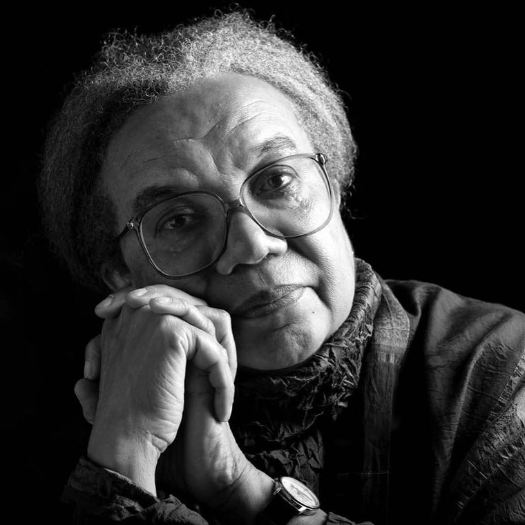
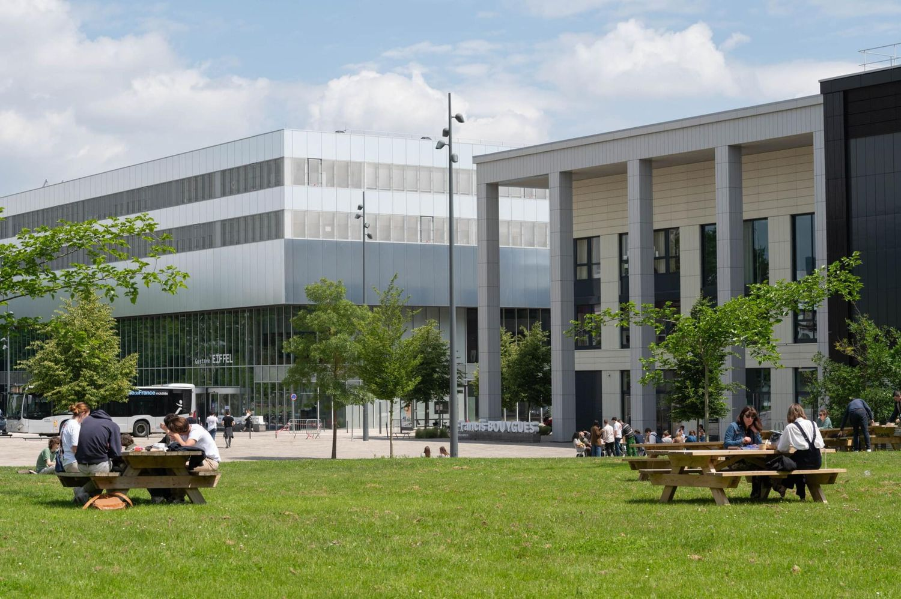
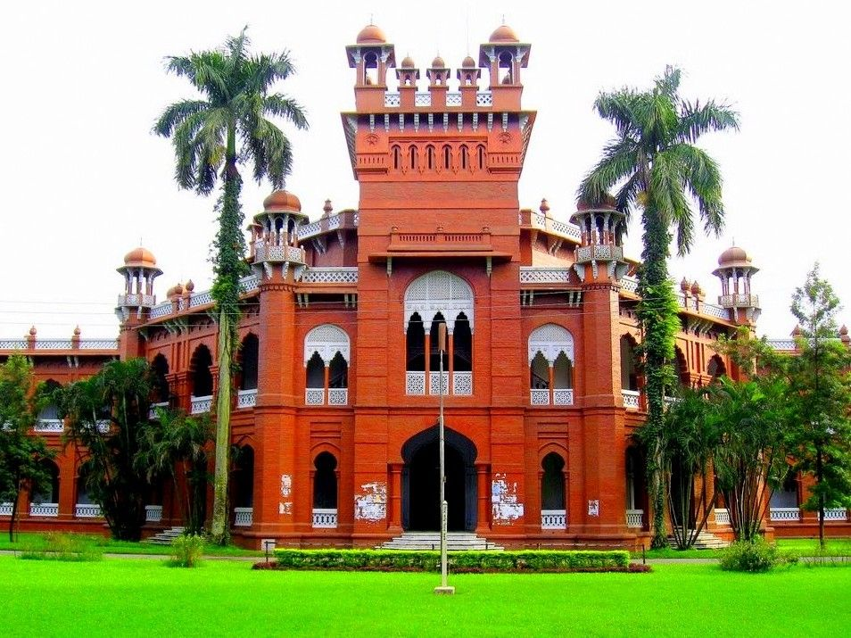
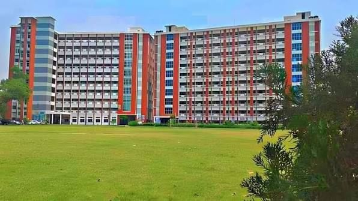
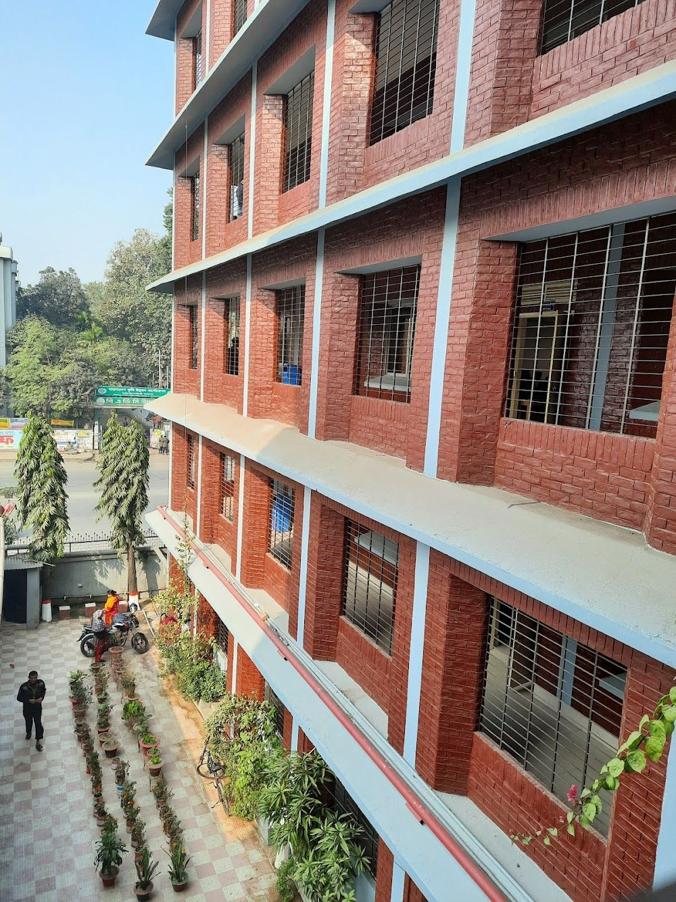
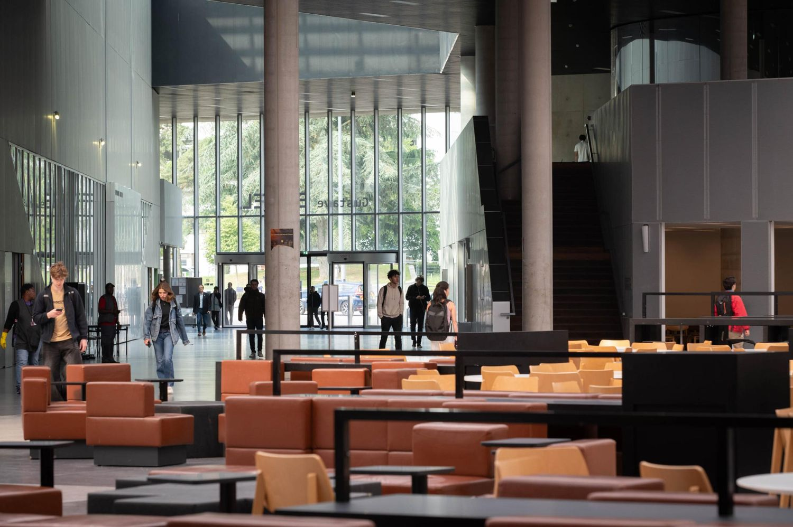
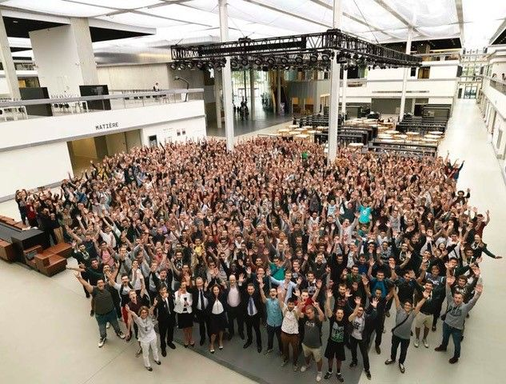

Education is for improving the lives of others and for leaving your community and world better than you found it.Marian Wright Edelman

Graduate programme in operations research covering stochastic programming, mixed-integer optimisation, reliability engineering and decision analysis under uncertainty. Master's thesis on integrated vehicle routing and order assignment supervised by Prof. Jakob Puchinger.
| Result | Distinction |
|---|---|
| 14 / 20 | Institutional Scholarship Holder, awarded on academic merit |

Undergraduate engineering degree covering operations management, production systems, quality engineering and industrial statistics. Three industrial placements completed during the programme, in food processing, steel manufacturing and textiles.
| Result | Standing |
|---|---|
| CGPA 3.50 / 4.00 | 87th percentile in the department |

Higher secondary study completed in 2019 with a perfect grade point average and a merit-based scholarship.
| Result | Distinction |
|---|---|
| GPA 5.00 / 5.00 | Merit-based scholarship |

Secondary school completed in 2017 with a perfect grade point average and a merit-based scholarship.
| Result | Distinction |
|---|---|
| GPA 5.00 / 5.00 | Merit-based scholarship |

